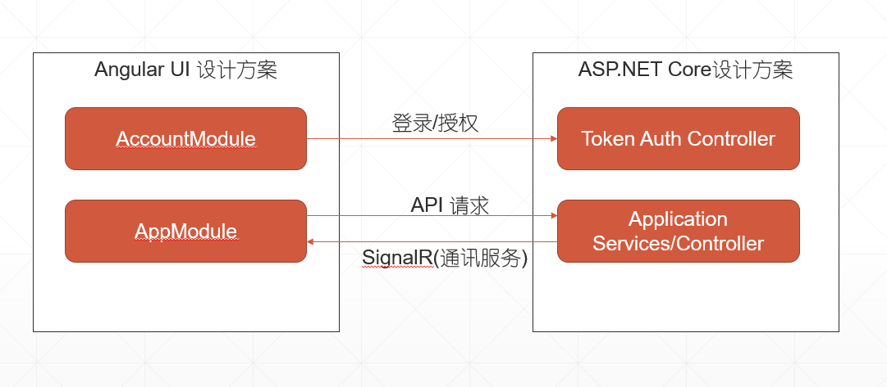

本文作者：52ABP 开发团队 文章会随着版本进行更新，关注我们获取最新版本 本文出处：https://www.52abp.com/wiki/52abp/latest 源代码： https://www.github.com/52abp
在阅读本文档之前，建议您先运行一次 52ABP 项目程序，打开过 Angular 版本的界面,如果你还没有运行过项目可以参考快速入门文档。 或者你已经对 ABP 有过一些了解。 那么您阅读本篇文档的时候将会更加容易理解这些概念。
我们推荐您使用 Visual Studio 2017(v15.9.0+)以上版本的工具来进行开发。 当然您也可以选择您喜欢的其他工具如：VsCode 或者 Rider。 因为 .NET Core 是跨平台的，所以您可以在任何操作系统中运行（MacOS/Linux/Windows)。
我们先来看下总体设计架构。 
Angular UI 项目一个可单独部署的项目，它不依赖于后端 ASP .NET Core，不用强制部署在一起。 在部署服务的时候，不用考虑他们必须在一台服务器上，只需要在部署的时候，指定好对应的 IP 或者域名以及端口号。就可以部署成功。
因为当 Angular 项目被部署出来的时候，它实际上是一个 HTML+JS 和 CSS 的网站，它可以在任何的操作系统和 Web 服务器上提供服务。
需要注意的是，我们的 ASP.NET Core 解决方案中没有任何 HTML、JS 和 css 代码，因为它是基于 token 的身份验证，而服务之间的通讯都是通过（RESE）风格的 API。
当您创建一个项目后，打开项目解决方案方案后，可以看到下图所示：
解决方案中有 7 个项目：
52ABP-PRO 解决方案中包含了三个应用程序：
appsettings.json 是.Net Core 中的系统配置文件，它在 Web.host 项目中包含许多设置，其中ServerRootAddress, ClientRootAddress和CorsOrigins三个配置是运行应用程序所必须的：
"AdminServerRootAddress": "http://localhost:6298/",
"WebSiteClientRootAddress": "http://localhost:11805/",
"CorsOrigins": "http://localhost:8080,https://pro.52abp.com/"
有关配置 Web.host 应用程序的详细信息，请查看Web.Host 项目介绍.
多租户的设计是为了让我们在开发 SaaS（软件即服务）应用的时候更加容易。使用这种技术，我们可以部署一套应用而服务于多个客户。 每个租户都有属于自己的角色、用户、设置和其他数据。租户和租户直接的数据是隔离的。
52ABP-PRO 的代码支持多租户的开发。默认为开启状态。当然也可以通过配置来关闭它。当您禁用它的时候，所有的多租户的功能都会被关闭。我们会默认开启一个名为“default”的租户。
在多租户的应用中，我们有两种不同类型的透视图：
多余多租户应用程序，URL 可以包含动态的租户名称（Tenancy_Name）。这种情况下，我们可以将租户名称通过占位符的形式来进行表现，如下所示：
"AdminServerRootAddress": "http://{TENANCY_NAME}.52abp.com/",
"WebSiteClientRootAddress": "http://{TENANCY_NAME}.app.52abp.com/"
而在设置 CorsOrigins 值的时候，可以使用*来代表允许所有子域进行访问。例如：
"CorsOrigins": "http://*.app.52abp.com/"
在启用了以上之后，我们还推荐您继续使用{TENANCY_NAME}作为 URL 地址作为租户的占位符，那么就需要您在 AngularUI 项目中配置 URL。配置好以上后，52ABP-PRO 就可以从 URL 自动检测当前租户信息。
如果您按照上面的方式配置好了，您还应该将所有子域重定向到您的应用程序。需要进行以下配置：
*.52abp.com或许还有其他的办法，但是这个应该是最简单了。欢迎沟通交流。
而我们在开发的时候不需要为租户配置子域名，我们可以采用更加简单的方法。我们开启多租户的时候提供了切换租户的功能来手动让我们在租户和宿主之间进行相互切换。
52ABP-PRO 采用的是NG-Alian-Pro作为 Angular 的前端模板，购买 52ABP-PRO会自动获得此授权无须再单独购买NG-Alian-Pro。
Angular 解决方案的入口是src\main.ts 。它的作用是用于引导 Angular 的根模块（RootModule）。解决方案的基本模板如下图所示：

RootModule 负责引导应用程序的加载。
AccountModule 提供登录，注册,第三方登录，密码忘记/重置，电子邮件激活等...它是懒加载。
AppModule 仅用于对应用程序模块进行分组并提供基本布局。它包含几个个子模块：
我们建议将模块化思想贯彻到底，应用程序划分为更小的模块，就像我们在启动项目中所做的那样，而不是将所有功能添加到主模块中。尽量使用懒加载的形式。
作为基础设施的模块，都应该有自己的路由。例如： AccountModule 的路由规则/account开头（如"/account/login"），AdminModule 的路由规则/app/admin(如"app/admin/users")
Angular 的模块都是基于其 url 加载模块，我们建议启用路由器延迟加载。例如，当您请求以"app/admin"开头的 URL 时，会加载 AdminModule 及其所有组件。如果您不请求这些页面，则不会加载它们。这加快了项目的启动时间（以及让开发调试也更快了，同时他们被独立分割成独立的模块）
除了那些基本模块，还有一些共享模块：
Angular 解决方案包含 src/assets/appconfig.dev.json以及src/assets/appconfig.prod.json 文件,它们分为开发环境和生产环境，其中都包含客户端的一些基本设置：
portalBaseUrl已配置，因为我们使用它来定义 URL 的格式。如果我们想将租户名称用作多租户应用程序的子域名，那么我们可以将appBaseUrl定义为
http://{TENANCY_NAME}.mydomain.com
{TENANCY_NAME}是租户名称的占位符。也可以为 remoteServiceBaseUrl 配置租用名称。要使租赁名称子域正常工作，我们还应在 IIS 的应用程序旁边进行两种配置：
\* .mydomain.com 之类的通配符。如果从 AppComponentBase 类继承组件，则可以预先注入许多常用服务（如本地化，权限检查器，功能检查器，UI 通知/消息，设置等等）。例如; 你可以在组件类中使用 this.l（...）函数进行本地化。在视图中，您可以使用 localize pipe。请参阅预构建的组件，例如用法。
更多的文档可以参阅https://www.52abp.com/Wiki/52abp/latest，我们正在加紧更新中。
来文档中心了解更多：https://www.52abp.com/wiki/